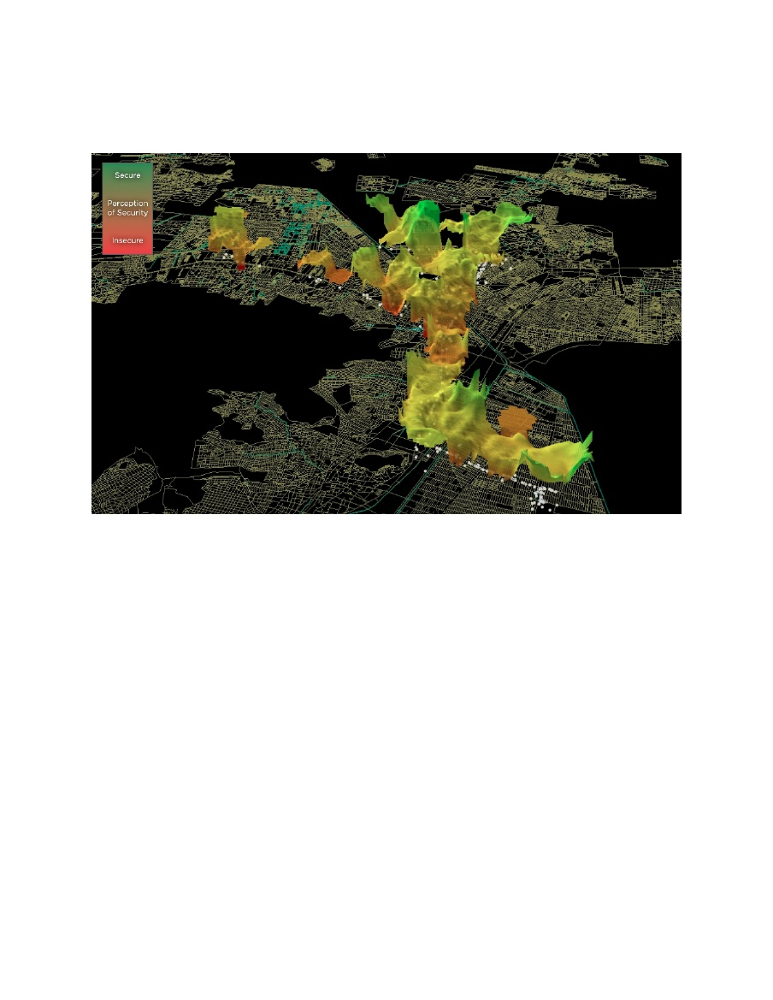
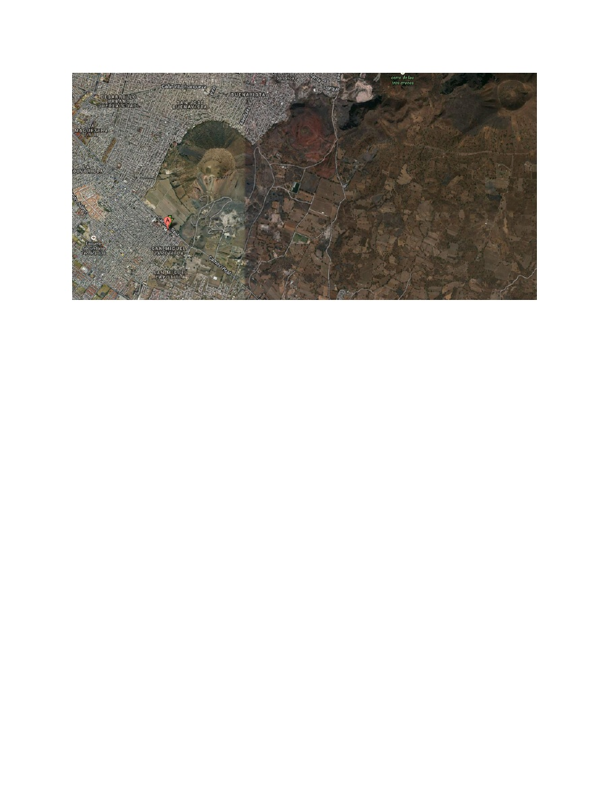
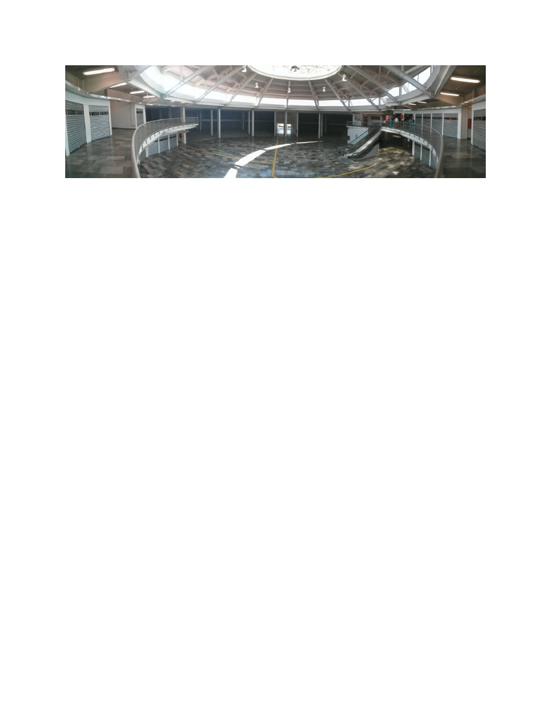

scribd. scribd. scribd. scribd. scribd. scribd.
Results from Flocktracker Alpha Run
Thursday, January 23, 2014
Welcome
First, thank you for your interest. I hope this report will help demonstrate where the application is in the development process, as well as clarify some technical questions that have arisen during various meetings. This report was prepared in a short few hours in the day following our test run at our study site. The purpose of this report is to observe the improvement in data output from the new software, as well as to provide some quick descriptive analysis, in order to show how quickly a report can be produced, using this device and data-sourcing strategy. If you have any further questions, please do not hesitate to reach out to myself, Kuan Butts (kuanb@mit.edu), or any others on the research team. More information can be found by visiting us online, as well, at http://flocktracker.tumblr.com/ .
About the Research
Flocktracker is an application being funded through research under Professor Christopher Zegras’ Mobility Futures Collaborative at MIT in Boston, Massachusetts within the Department of Urban Studies and Planning. Current research at Pereferico and the development of the new application “Flocktracker” is being lead by Kuan Butts, in collaboration with Daniel Palencia, Arturo Cadena, and Jose Manuel of Urban Launchpad MX and Danny Chiao, a current undergraduate computer science student (and coder extraordinaire) at MIT. This research builds o
ff
of work from the Summer of 2013, during a research initiative lead by Kuan and funded through MISTI and MIT Mexico in partnership with local travel analytics firm Urban Travel Logistics. Team members with Kuan for that project included Arturo Cadena, Liqun Chen, Gabriel Hernandez, Bin Jung, Daniel Palencia, and Clara Suh. Please feel free to contact Kuan with any further questions regarding the application or research.
Flocktracking Concept
Flocktracking is a concept that aims to advance survey methodology, making data collection simpler, faster, and more robust. A group of well-trained volunteers, or “Flock,” are dispatched in a strategic manner to perform surveys targeted at understanding information in a dynamic manner. That is, they are dispersed in a manner intended to capture elements that might not be measurable in a static environment. For example, if one were to compare transit routes, as we did, volunteers would be dispatched on multiple buses, strategically through the day so as to capture peak and o
ff
-peak riders, and maintain a consistent presence and rotation of coverage over the linear distance of the ride.The application then converts this spatial coverage into a powerful, data-based, accrual of information that is dynamically arrayed by time and space. That is, in the current application, an individual’s geospatial coordinates, the number of riders in the vehicle, the volume of riders distributed according to gender, the speed, and the time can all be combined into a packet
1 / 12
and uploaded at 30 second intervals, enabling a “high-resolution” mapping of the total course of the trip. Surveys are uploaded and conjoined with this point specific data, allowing for robust data sets specific to a plethora of environmental factors.
Above: This is an image from the previous (and ongoing) research on and analysis of the CETRAMs that have been redeveloped in the north of Mexico City. The site here is CETRAM Ciudad Azteca, also known as Mexipuerto. The topographic element is a three-dimensional representation of security levels in the State of Mexico, emanating north from the station, which is located in the bottom right of the above image. Red and lower levels of the topography indicate low levels of perceived security, while greener and higher ridges indicate higher levels of perceived security.
This application is flexible and is intended for use in a variety of formats. For example, the application is currently being used to perform a sociodemographic analysis on poverty and household living situations in the south of Mexico City, as well as tested for use in counting bicyclists by type in urban areas within the city.
Introduction to the Test Site
A trial run of the new, natively coded application was undertaken on Thursday, January 23, 2014. The trial run targeted “Ruta 56,” a Peseros line operating out from Pereferico Oriente to Zapotitla in Tlahuac. While a number of “Ruta 56” lines exist along Avenida Tlahuac, this particular line terminates at the southern base of a large mine to the southeast of the city. A heavily-carved mine acts as a landmark, signifying the farthest extent of dense urban development in this newly connected portion of the city. The Gold Line Metro that extends south from the city center has been designed to account for the presumed growth that this portion of the city is expected to have in the coming years. A visualization of this site can be seen in the following image.
2 / 12

Above: The “A” marker indicates the termination point of the route studied. To the north of that, the large mountain that was mined can be seen. Di
ff
erences in sourced satellite photos cause a gradient change approximately one-third of the way across the above image. This shift corresponds, approximately, with the extent of urbanization in Mexico City. Thus, this portion of Tlahuac can be seen as a frontier of sorts for the expanding urbanity. Image via Google Earth.
Target Facility
Pereferico Oriente is one of two new CETRAM developments within the Mexico City metropolitan region. Previously, there had been 46 total CETRAM sites, with 39 of those being connected directly to the highly formalized Metro and Metrobus operations in the Federal District. The development of these two stations brings those numbers up to 48 and 41, respectively. Both new stations are along the new Gold Line Metro that runs in the south of Mexico City, with Pereferico Oriente at the midpoint and Tlahuac at the end of the line, farther to the south. Pereferico Oriente is the third in a growing list of newly developed multi-use transit facilities being built to enhance CETRAM sites. This site, in addition to Ciudad Azteca (Mexipuerto) and El Rosario, represent three very di
ff
erent models or urban intermodal commercial development. Unlike El Rosario and Ciudad Azteca, interviews on site suggest that this development was a project of the government alone, whereas the other two have been 30-year public land concessions to private developers, who use retail income to improve site facilities and financially support improved vehicle operations.Pereferico Oriente has yet to secure any major tenants and, aside from the operations manager’s own personal shops, the structure remains completely empty. Costs for the stalls was quoted at $500.00 Pesos during interviews with tenants. These shops, which number about one-half dozen, are mostly owned by the woman who was put in charge of the station operations. Her intended job was to secure local commerce operators to fill the small stores, and large anchor retail functions for the larger space. So far none of the larger spaces have been filled, and the smaller spaces remain almost completely empty. The only primary stores in operation are owned by the operations woman, herself, and, according to an interview with a sales person, do not appear to be generating a su
ffi
cient income.
3 / 12

Above: Image of the interior of CETRAM Pereferico Oriente. The building remains largely vacant to this day, approaching a year after its original completion. The mayor of the Federal District was scheduled, multiple times, to come to a ceremony for its “o
ffi
cial” opening, but has yet to do so. Shops rent for $500.00 Pesos per square meter, a rental cost so high, and in a building with so little tra
ffi
c, that no large tenants have yet to move in, citing the costs as exorbitant. Photograph taken by Kuan Butts on 22/01/2014.
Pereferico Oriente has been targeted simply because it is the third and newest CETRAM. Having started vehicular operations only on the 9th of January this year, the facilities remain extremely new and very limited. Thus, only one day of study was approached, as it really needs far greater ridership and use to be of any value in further research. Potentially, looking forward, another one-day test run will be performed, with the intention of monitoring shifts in perception over time.
Research Methodology
Methodology and surveying was performed identically to last summer at Ciudad Azteca and El Rosario. The same questions were asked, and the scheduling formal was also kept exactly as before. The goal in doing this was to acquire some comparative results to roughly estimate how the improved capabilities of the application could enhance surveying performance for participants.As with the prior initiative, a route operating inside the CETRAM and one operating outside the CETRAM was selected. Currently, according to one station attendant, only five routes have opted in to the CETRAM. The circulation present at the CETRAM makes access, especially for westward-bound vehicles, di
ffi
cult to manage as there is only one entrance facing onto Tlahuac, thus requiring westward-bound drivers to maneuver their vehicle around the central divider, performing a u-turn into oncoming tra
ffi
c, and then cross south across all lanes of tra
ffi
c to enter the station entrance, situation just after a congested intersection.Currently, few operators opt to use it and, for the vehicles we studied, none used the CETRAM on the westward-bound trips, citing it as far too di
ffi
cult to enter. Thus, “inside” CETRAM trips were only present for “outbound” trips.
Performance Results
Simply put, the day’s results were extremely positive. Route accuracy was extremely high and the ability for the application to cache data, as well as move most upload tasks to the background, meant no crashes, no lost data, and extremely high resolution results. Because geolocation was an optimized background task, with the ability to cache location in instances
4 / 12

|